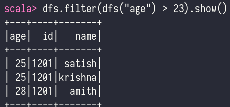

Spark API
- api - application programming interfaces
- helps to provide similar performance in all languages
- language API
- scala
- java
- python
- sql
- r - spark
SparkSession
- we can control spark application through a driver process called the
SparkSession SparkSessioninstance is the way Spark executes user-defined manipulations across the clusters- one to one correspondence between a
SparkSessionand aSparkApplication SparkSessionobject is available to the user, which is the entrance point to the spark code- python, r that spark translates into code that it can ron on executor jvm
Structured API overview
- The Structured APIs are a tool for manipulating all sorts of data, from unstructured log files to semi-structured CSV files and highly structured Parquet files.
-
these api refers to three core types of distributed collection API's:
- datasets
- data frames
- SQL tables views
-
Spark has two notions of structured collections
- DataFrames
- Datasets
- Spark uses an engine called Catalyst that maintains its own type of information through the planning and processing of work
- In doing so, this opens up a wide variety of execution optimizations that make significant differences
- Spark types map directly to the different language APIs that spark maintains and there exist a lookup table for each of these in Scala, java ,python , sql, r
- Even if we use spark's structured APIs form python or R, the majority of manipulations will operate strickly on spark types, not python types
val df = spark.range(500).toDF("number")
df.select(df.col("number")+10)
df = spark.range(500).toDF("number")
df.select(df["number"] + 10)
Data Frames
- A DataFrame is a distributed collection of data, which is organized into named columns.
- Conceptually, it is equivalent to relational tables with good optimization techniques.
- A DataFrame can be constructed from an array of different sources such as Hive tables, Structured Data files, external databases, or existing RDDs.
Features of data frame
- Ability to process the data in the size of Kilobytes to Petabytes on a single node cluster to large cluster.
- Supports different data formats (Avro, csv, elastic search, and Cassandra) and storage systems (HOFS, HIVE tables, mysql, etc).
- State of art optimization and code generation through the Spark SQL Catalyst optimizer (tree transformation framework).
- Can be easily integrated with all Big Data tools and frameworks via Spark-Core.
- Provides API for Python, Java, Scala, and R Programming.
SQLContext
- SQLContext is a class and is used for initializing the functionalities of Spark SQL.
- SparkContext class object (sc) is required for initializing SALContext class object.
- The following command is used for initializing the SparkContext through spark-shell.
spark-shell
- By default, the SparkContext object is initialized with the name
scwhen the spark-shell starts. - Use the following command to create
SQLContext.scala> val sqlcontext = new org.apache.spark.sql.SQLContext(sc)
employee.json - note that records are separated by line (it is not a normal json file)
{"id": "1201", "name": "satish", "age": "25"}
{"id": "1201", "name": "krishna", "age": "25"}
{"id": "1201", "name": "amith", "age": "28"}
{"id": "1201", "name": "javed", "age": "22"}
{"id": "1201", "name": "ram", "age": "23"}
- Follow the steps given below to perform DataFrame operations
- Read the JSON Document
- First, we have to read the JSON document. Based on this, generate a DataFrame named (dfs).
- Use the following command to read the JSON document named employee,json.
- The data is shown as a table with the fields ~ id, name, and age.
scala> val dfs = sqlcontext.read.json("employee.json")- Output - The field names are taken automatically from employee.json.`
dfs: org.apache.spark.sql.DataFrame = [age: string, id: string, name: string]

- Show the Data
- If you want to see the data in the DataFrame, then use the following command.
scala> df.show()- Output - You can see the employee data in a tabular format.

- Use printSchema Method
scala> dfs.printSchema()
- use select method
dfs.select("name").show()
- use filter
dfs.filter(dfs("age") > 23).show()- 
- use groupby method
dfs.groupBy("age").count().show()
- Read the JSON Document
spark-shell // will create a sc variable itself
val sqlcontext = new org.apache.spark.sql.SQLContext(sc)
val dfs = sqlcontext.read.json("employee.json")
df.show()
dfs.printSchema()
dfs.select("name").show()
dfs.filter(dfs("age") > 23).show()
dfs.groupBy("age").count().show()
- A DataFrame is the most common Structured API and simply represents a table of data with rows and columns.
- This list that defines the columns and the types within those columns is called schema.
- The reason to distribute data is
- the data is too large to fit on one machine
- it will take long time to perform that computation on one machine
Partitions
- To allow every executor to perform work in parallel, Spark breaks up the data into chunks called partitions.
- A partition is a collection of rows that sit on one physical machine in your cluster.
- A DataFrame's partitions represent how the data is physically distributed across the cluster of machines during execution.
- lf you have one partition, Spark will have a parallelism of only one, even if you have thousands of executors.
- If you have many partitions but only one executors, Spark will still have a parallelism of only one because there is only one computation resource.
Transformations
- core data structure is immutable, meaning they cannot be changed after they're created
- to use data it is transformed
- two types of transforamtions
- those that specify narrow dependencies
- those that sepecify wide dependencies
Datasets
- Datasets in Apache Spark are an extension of DataFrame API.
- It provides type-safe, object-oriented programming interface.
- Dataset takes advantage of Spark's Catalyst optimizer by exposing expressions and data fields to a query planner.
- Spark introduced Dataset in Spark 1.6 release.
Features
- It efficiently processes structured and unstructured data.
- It represents data in the form of JVM objects of row or a collection of row object, which is represented in tabular forms through encoders.
- It allows to convert an existing RDD and DataFrames into Datasets.
- It provides compile-time type safety.
- Dataset APIs is currently only available in Scala and Java.
- In Dataset it is faster to perform aggregation operation on plenty of data sets.
Columns
Rows
Spark Types
Structured API Execution
Overview:
- Write
DataFrame/Dataset/SQL Code. - If valid code, Spark converts this to a Logical Plan.
- Spark transforms this Logical Plan to a Physical Plan, checking for optimizations along the way.
- Spark then executes this Physical Plan (RDD manipulations) on the cluster.
Logical Planning
- The logical plan only represents a set of abstract transformations that do not refer to executors or drivers, its purely to convert the users set of expressions into the most optimized version.
- It does this by converting user code into an unresolved logical plan.
- This plan is unresolved because although your code might be valid, the tables or columns that it refers to might or might not exist.
- Spark uses the catalog, a repository of all table and DataFrame information, to resolve columns and tables in the analyzer.
- The analyzer might reject the unresolved logical plan if the required table or column name does not exist in the catalog.
- If the analyzer can resolve it, the result is passed through the Catalyst Optimizer, a collection of rules that attempt to optimize the logical plan by pushing down predicates or selections.
- Packages can extend the Catalyst to include their own rules for domain-specific optimizations.

Physical Planning
- After successfully creating an optimized logical plan, Spark then begins the physical planning process.
- The physical plan, often called a Spark plan, specifies how the logical plan will execute on the cluster by generating different physical execution strategies and comparing them through a cost model.
- Physical planning results in a series of RDDs and transformations.
- This result is why you might have heard Spark referred to as a compilerit takes queries in DataFrames, Datasets, and SQL and compiles them into RDD transformations.
NOTE: An example of the cost comparison might be choosing how to perform a given join by looking at the physical attributes of a given table (how big the table is or how big its partitions are).

Execution
- Upon selecting a physical plan, Spark runs all of this code over RDDs, the lower-level programming interface of Spark.
- Spark performs further optimizations at runtime, generating native Java bytecode that can remove entire tasks or stages during execution.
- Finally, the result is returned to the user.